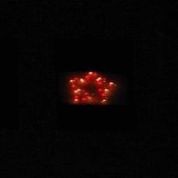
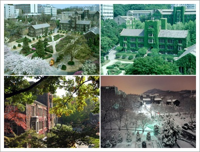
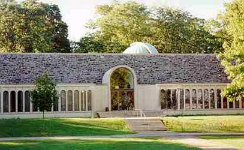
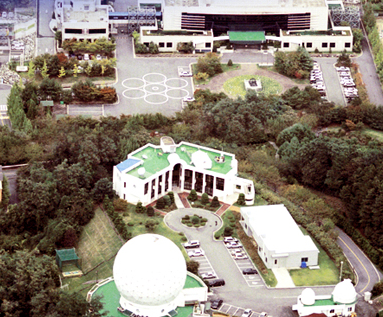

|
|
Korea Astronomy and Space Science Institute 776, Daedeokdae-ro Yuseong-gu Daejeon, Republic of Korea 305-348
https://astromsshin.github.io/ |
Publications | Research | Software | Links
Opportunity of post-doctoral reseach in KASI
(Korea Astronomy and Space Science Institute)
with applications for Korea Research Fellowship (KRF).
LSST (Large Synoptic Survey Telescope) in KASI
Contact me if you are interested in the above opportunity.
- Announcement of two calls in January and April.
- You must have less than 5 years postdoctoral experience after you receive a Ph.D. degree in non-Korean institutes.
- If you are Korean, you must be in foreign institutes when you apply for the fellowship.
- See the most recent call for proposal in 2018.
학부생 연구: 항상 존재하는 것은 아니지만 학부생들의 경우도 연구 인턴 프로그램이 가능한 경우가 있습니다.
참고로 학부생 연구 인턴을 위해 따로 준비된 연구비가 있지는 않습니다.
+
|
Useful data
1. Multiply imaged lensing systems in CASTLES seen through SDSS : are you interested in images of multiply imaged lensing systems? |
 Is it a variable star? It's YSTAR. |
|
Department of Astronomy, Yonsei University, Seoul, Republic of Korea
*** StarDB: Analysis of spatial and temporal variability in astronomical data
|
 Four seasons at Yonsei University, Seoul, Republic of Korea. (I was an undergraduate student at Yonsei.) |
|
 Peyton Hall, Princeton University, Princeton, NJ, USA. (Peyton hall is the building of astrophysics department. I was a graduate student at Princeton.) |
Department of Astrophysical Sciences, Princeton University, Princeton, NJ, USA
|
|
Department of Astronomy, University of Michigan, Ann Arbor, MI, USA
|
Dennison building, University of Michigan, Ann Arbor, MI, USA. |
|
Denys Wilkinson building, University of Oxford, Oxford, UK. |
Department of Physics, University of Oxford, Oxford, UK
|
|
Korea Astronomy and Space Science Institute
|
 KASI headquarter, Yuseong-gu, Daejeon, Republic of Korea. |
|
I use |


{kind=link}
{kind=link}
{kind=link}
{kind=link}
{kind=link}
{kind=link}
{kind=link}